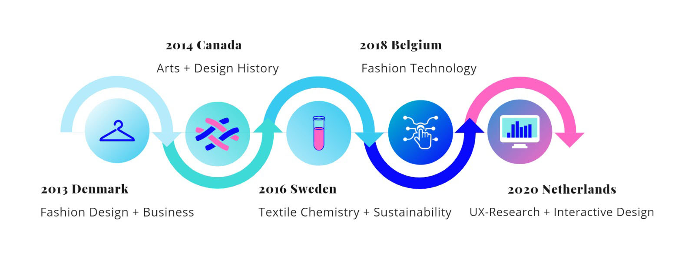

My story

Did you know that we all have the ability to travel through time? Yes, you and I, well all of us have the ability of doing so by just stepping outside our doors! By exploring different cultures and working within cross-specialties I have come to learn that there are countries business and cultures that are living in the past, but there are also some who are ahead of us. All we have to do is explore, experience and educate ourselves. As I like to say "The future is NOW" and I am ready to be part of it!
UX Researcher + Designer + Material Educator
Experience

Founder Hearth Design Lab
July 2018-Present
From project development, sourcing materials to proposal presentations, workshops and creating prototypes.Provides various services ranging from development work, speaking engagements, instructor training, workshops, and curriculum development. See more at hearthdesignlab.com

Project Manager, Jasna Rok Fashion Technology Lab
March 2018 - October 2018
Lead for the curation of SuperNova2018, FashTech pavillion.
Project lead, conducting research on innovative technologies withing fashion, lifestyle and health industries. Key tasks consisted of making queries and offers to clients through cross specialty collaborations.Education

Fabric Academy
September 2019- Current:
Open source international course focusing on material developement and textile innovation.
The Hague University
August 2019- Current:
User driven experience design, focusing on research based development of services and interactive interfaces.

Via University College Bachelor of Applied Sciences
August 2013- January 2017 Herning, Denmark:
Fashion Design + Business.
Högskolan i Borås Erasmus Exchange
January 2016 - June 2016 Borås, Sweden:
Textile Engineering, Sustainability + Textile Chemistry.
Ryerson University Erasmus Exchange
August 2014 - December Toronto, Canada:
Fashion Design + Tailoring, cultural studies and Design History.